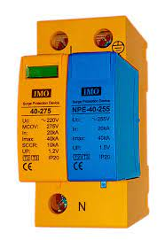

Lightning Arrestor
What is a Lightning Arrester:
Lightning Arrester is a protective device used to protect the circuit from lightning strokes having high transient voltage surges, surge currents due to lightning, spark and isolation arcs etc.
Lightning Arrester:
Lightning Arrester is used to protect the power system by redirecting the high voltage surges to the ground. Although, the earthing or ground wire also protects the overhead lines and power system from direct lightning strikes but it may fail to protect against traveling waves which may reach to the terminal connected devices and equipment.
For this reason, surge diverters or lightning arresters are used to protect the power system against such produced surges by faults or lightning stokes.
Lightning arresters are installed on the peak height of a structure i.e. transmission poles and towers and building to provide a safe path to the discharging current and voltage caused by the lighting strokes to the ground to protect the system form lightning.
Main Differences between Surge Arrester and Lightning Arrester:
Surge arrester installed inside the panel board while lightning arrester are installed outside.
Surge arrester protects the installation from inside while lightning arrester protects the equipment from outside.
Surge arrester protects the system from lightning, switching, electrical faults and other transients voltage and surges while lightning arrester are mainly used for lightning strikes and associated surges.
Surge arrester intercepts the surges and send the extra unwanted energy to the ground wire while lightning arrester divert the energy flow to the ground through the arrester to the ground.
Surge arrester can be used as a lighting arrester while lighting arrester can’t be used as a surge arrester.
Defining Some Important Components:
A lightning rod (also known as lightning conductor) is a metal rod (copper or aluminium or other conducting materials) installed on the top of the structure ( transmission and distribution towers , buildings etc) to protect it from the direct lighting strikes.
Lightning is the electrostatic discharge between clouds and earth. If they hit the power lines directly, the system voltage may rise to a dangerous level which may harm the electrical installation and equipment. For this reason, a lightning rod is used to protect the electrical installation, equipment and devices from direct hit of lightning strokes.
Lightning rod is cheaper than surge arrester which is mounted on the top surface of a building or power lines tower which provides a safe path to the high value electrostatic charges and lightning currents to the ground (it must be properly earthed to the grounding system as well).


Surge Suppressor is also known as surge protector or transient suppressor. It is a device installed in the home distribution board to protect the home wiring installations from voltage surges or switching surges.
For example, when an inductive load is switched off, it generates voltage surges (also known as switching surges) in the system following the self inductance laws of back EMF.
E = – L di/dt.
These sudden spikes and surges may damage the devices sensitive to the voltage rating.
In inductive load, switching the contactor could produce switching surges which may harm other connected devices in the system. For this reason, a surge suppressor is used in LV contactor to protect the contactor from external surges and system from harmful effects of contactor switch itself.
Surge suppressor is typically a utility outlet(s) with power ON/OFF switch having three wire cord which can be plugged in a wall outlet.
The value of our homes supplies voltage for instance 120V (US) and 230V AC (UK & EU) is RMS value known as effective value. The peak value of 120V and 230V is 170VP and 325VP having 60Hz and 50Hz of frequency respectively. In case of transients caused by multiple factors such as lightning or switching surges, the value of peak voltage may rise to many hundreds of volts even thousands volts of irregular pulses for a very short of time (generally, in microseconds (10-6). These pulses could harm the sensitive devices especially electronic devices.
In this case, the surge suppressor prevents a voltage having specific value of peak voltage. For example, a 250V voltage suppressor will operate at 230V normally while it will redirect the line power to the ground if the value of transient pulses exceeds the 250V limit.
The main difference between surge suppressor and surge arrester is that surge suppressor has low voltage rating slightly greater than the normal voltage rating with low energy dissipation capability while surge arrester has fair high voltage rating than the rated voltage with far greater energy dissipation ability without affecting the insulation.
Good to Know: Surge suppressor should not be used for protecting a circuit from the lightning produced transients and surges.

We carry out Lightning arrestor installation, Troubleshootings and Maintenance. We have the technical competency and integrity to efficiently design, undertake and deliver Lightning arrestor installation of any kind and magintude.Call on us for your Lightning arrestor solution at ESAR-Engineering Global.